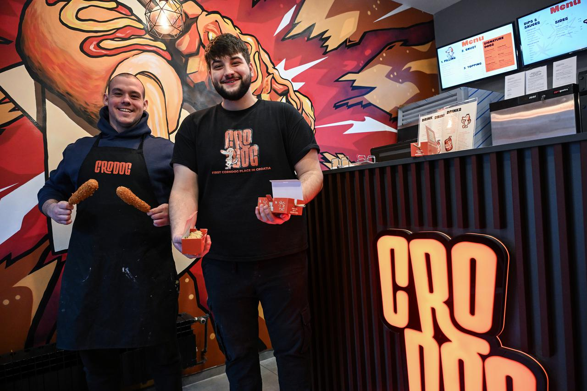
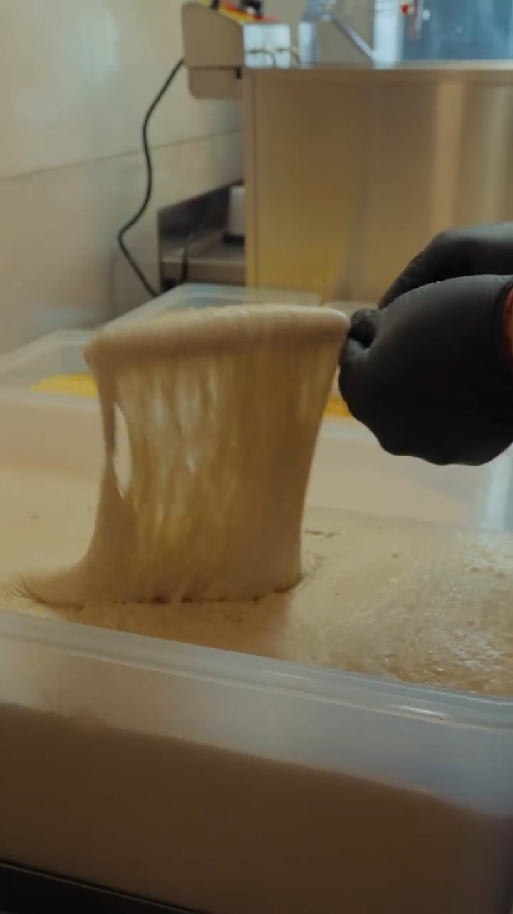
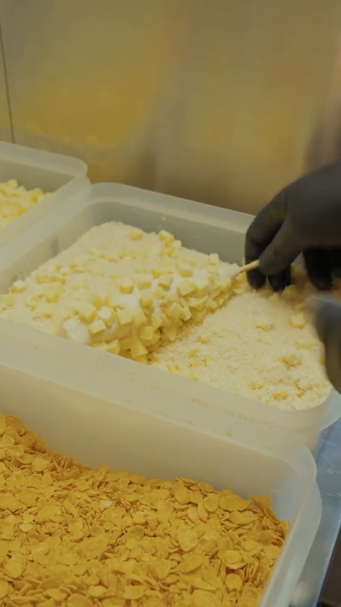
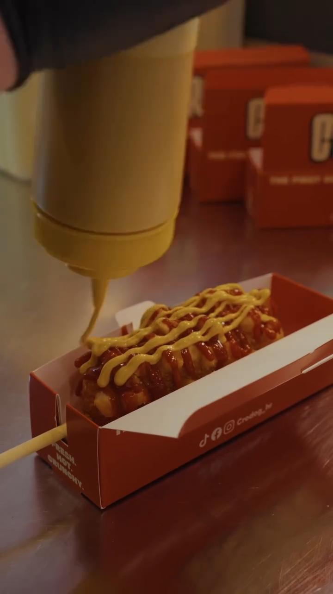
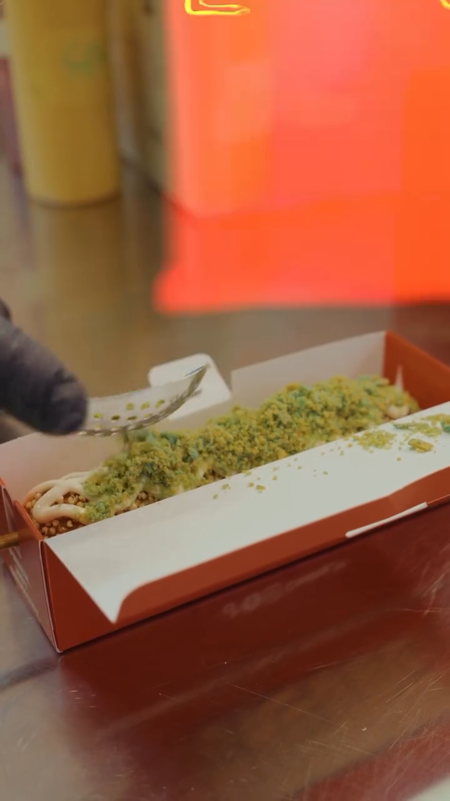
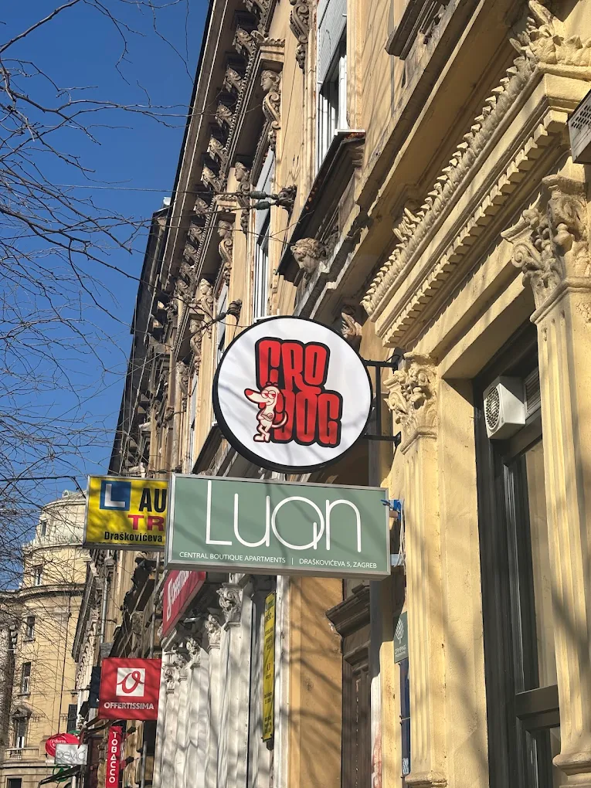

First CornDog Place
in Croatia.
"New York mi je dao ideju. Zagreb je dobio svoj corndog."
Bruno je putovao u New York, probao prvi corndog i zaljubio se u ideju. Kad se vratio u Zagreb, shvatio je — takvog se ovdje ne može pojesti. Zajedno s Blažom pokrenuo je CroDog.
Koncept je jednostavan: Build Your Own. Ti biraš filling, crust, topping, dip — mi pečemo. Od klasičnih hrenovki do mozzarelle i vege opcija, svaki je corndog malo tvoj.

4 koraka.
Tvoj dog.

Filling
Pileća hrenovka, debrecinka, vege, mozzarella, hrenovka punjena sirom — 7 opcija.

Crust
Panko, krumpir, kvinoja popcorn, Pringles sour cream, Corn Flakes, Nacho. Odaberi.

Dip & Sauce
House umaci — sweet & spicy mayo, garlic mayo, honey mustard. Plus 7 klasika.

Topping
Prženi luk, nacho, Pringles sour cream, plavi i crveni takis — po želji.
Half & Half.
Za one koji ne biraju.
Pola sir, pola debrecinka. Krumpir crust, spicy mayo. Najtraženi kombo u dućanu — zato što nema krivog zalogaja. Svaki corndog se radi na narudžbu, pred tobom.
Pogledaj meni →Draskoviceva 5.
Vidimo se.
Centar Zagreba, par koraka od glavnog trga. Najvece guzve su pri otvaranju i kraj smjene — za mir dodji izmedu 16 i 17h.
- Pon – Sub14:00 — 22:00
- NedjeljaZatvoreno

